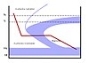

austempering

Definition: Austempering is heat treatment that is applied to ferrous metals, most notably steel and ductile iron. In steel it produces a bainite microstructure whereas in cast irons it produces a structure of acicular ferrite and high carbon, stabilized austenite known as ausferrite. It is primarily used to improve mechanical properties or reduce / eliminate distortion. Austempering is defined by both the process and the resultant microstructure. Typical austempering process parameters applied to an unsuitable material will not result in the formation of bainite or ausferrite and thus the final product will not be called austempered. Both microstructures may also be produced via other methods. For example, they may be produced as-cast or air cooled with the proper alloy content. These materials are also not referred to as austempered.
Source: Wikipedia
Wikipedia Page (Something wrong with this association? Let us know.)
Wikidata Page (Something wrong with this association? Let us know.)